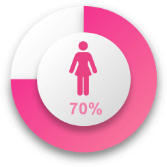

舒潔粉絲團
舒潔粉絲團遠離私密處感染危機
從良好廁後清潔起

不能說的秘密--關於女性的私密困擾
 根據資料顯示，全世界約有七至八成女性，一生中曾經歷私密處發炎的困擾。而在台灣，過往女性常受傳統保守觀念影響，當發現有類似症狀時，常視為「不能說的秘密」，甚至因而延緩就醫時間。然而，一旦私密處發炎情形未獲改善，除了可能產生異味、紅腫發癢影響睡眠品質外，更會在發生性行為時感到疼痛，嚴重影響到女性與另一半的親密關係，進而加重患者心理壓力。
如廁後清潔不善，小心引發私密處感染！
臺北醫學大學附設醫院婦科主任暨不孕症主治陳菁徽醫師表示，依據多年臨床經驗，最常見的陰道發炎起因就是細菌與黴菌感染，而感染之途徑又與個人衛生習慣息息相關，包括：如廁後清潔不夠完善、穿著過緊衣物、免疫力較低、頻繁之性行為等。陳醫師進一步指出，正常陰道環境酸鹼值偏酸，PH值約3.5～4.5。除了生理期間，一般正常健康的分泌物則介於透明與乳白色間，但若發現分泌物有異於平日的臭味，私密處也有灼熱、發癢的情形，則需立即就醫檢查，確認自己是否有陰道感染、發炎之問題。
善用濕式衛生紙，呵護私密處從日常清潔做起
陳菁徽醫師指出，因男女生理構造不同，如廁後的習慣也不盡相同。且女性定時有月經來報到，再加上尿道與陰道比較短，為了避免外來與肛門附近的細菌感染，日常如廁後的適度清潔非常重要。許多患者前來求診常反應，因使用公共場所的免費衛生紙，質地較乾燥粗糙，長期重複使用擦拭，便造成私密處過度刺激或破皮等現象。因此建議女性，如欲降低陰道感染之機率，現在市面有「濕式衛生紙」可做為私密清潔的新選擇，除了能降低因摩擦而有皮膚損傷的機率，弱酸性的配方也能維持陰道的酸鹼平衡，於生理期來時也能更輕鬆地擦淨經血。且不同於一般濕紙巾材質，濕式衛生紙還能於使用後丟入馬桶沖水分解，環保不留痕跡。
預防私密感染，醫：從日常廁後清潔做起
隨著炎炎夏日到來，陳菁徽醫師提醒女性，因台灣天氣較潮濕炎熱，如要避免私密處感染危機，在清潔上可選用偏酸性的濕式衛生紙或外用清潔劑；也須避免長期穿著緊身衣褲，應選擇較寬鬆或純棉的內褲、下著；如有性伴侶，發生性行為時也應注意清潔與潤滑，彼此尊重以避免互相感染。最後陳醫師也呼籲，只要維持良好作息、正常飲食、睡眠充足，每日飲用足量的水，並多攝取蔓越莓或益生菌，增強自身免疫力，就能遠離那些「不能說的秘密」。